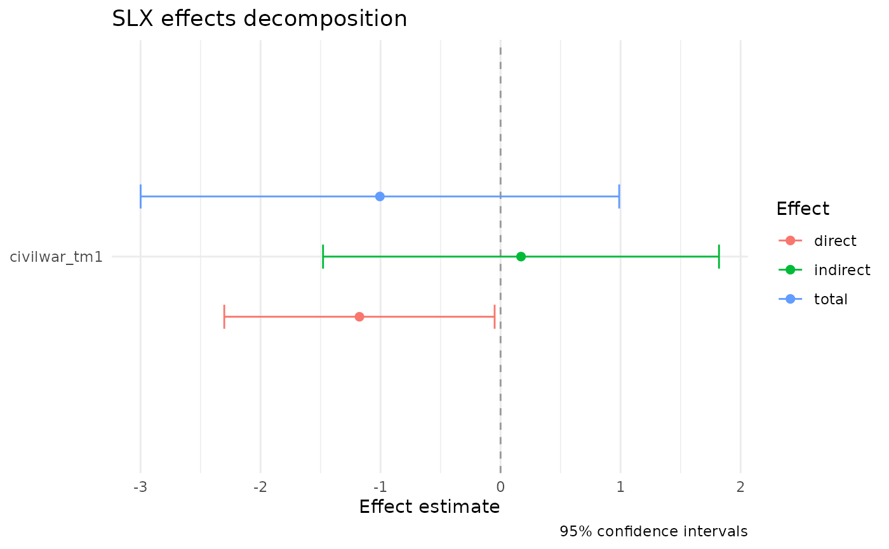

Produces a ggplot of the direct, indirect, and total effects from an
SLX model, with 95% confidence intervals. For models with
variable-specific weights matrices, effects are faceted by w_name
so spillover patterns from each matrix are visible side-by-side.
Usage
slx_plot_effects(
fit,
types = c("direct", "indirect", "total"),
conf.level = 0.95,
by_order = FALSE,
...
)Arguments
- fit
An
slxobject returned byslx().- types
Character vector of effect types to include. Any subset of
c("direct", "indirect", "total"). Default shows all three.- conf.level
Confidence level for the intervals. Default 0.95.
- by_order
Logical; if
TRUE, break indirect effects out by order of W. DefaultFALSE.- ...
Passed to
slx_effects().
Examples
data(defense_burden)
W <- slx_weights(style = "custom", matrix = defense_burden$W_contig,
row_standardize = FALSE)
fit <- slx(ch_milex ~ milex_tm1 + civilwar_tm1,
data = defense_burden$data, W = W, lag = "civilwar_tm1")
slx_plot_effects(fit)
